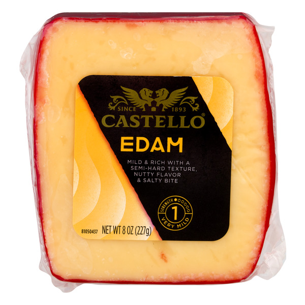

Wisconsin#
Barnum Blue (Blakesville Creamery)#
{kind=link}
Style: Blue
Milk: Goat
Purchase location: Unknown
Purchase date: 11/24/22
Julie’s comments: Blue! Stinky! Has a mottled grainy brown thin rind with an ivory & blue/green middle. Firm & crumbly, relatively smooth texture. Salty & funky in the way that goes to the back of the throat. It’s not toooo moldy old blue cheese - salt helps balance. 2.81/5
Andrew’s comments: Salty, funky blue taste, rich but not overpowering. Really nice subtle flavor compared to more standard Blues. Bit of strange aftertaste though, slightly metallic. Great texture, firmer than other Blues, crumbly & chewy simultaneously. Afternote: their website describes texture as fudgy, which is perfect description. 4.1/5
Thanks to Manki Kim & Zoey Song for this cheese!
Buttermilk Blue Cheese (Roth)#

Style: Blue
Milk: Cow
Purchase location: Giant
Purchase date: 05/28/22
Julie’s comments: Salty, stinky, funky, creamy crumbly white & blue-grey cheese with no rind. Usually not my thing, but this is pretty good with savory foods, less salty chips (cheese itself very salty) 2.34/5
Andrew’s comments: Salty, funky, creamier than most blue. Tasty in food (on buffalo chik patties, in stirfry), but ok solo or with chips too. Gets kind of old though, don’t want too much of it. 2.3/5
Thanks to Barb & Rob Necarsulmer for this cheese!
Edam (Castello)#
{kind=link}
Style: Edam
Milk: Cow
Purchase location: Unknown
Purchase date: 06/01/21
Julie’s comments: Pale yellow/tan, firm but semi hard. Sharp, like a mild cheddar. Creamy, a bit nutty. Good melted. Pretty mild. 3.0/5
Andrew’s comments: Pretty mild, somewhat sharp. Chewy/bouncy texture. Good snack cheese, reminds me of cubes on cheese tray, fairly unmemorable. 2.3/5
Evalon (LaClare Creamery)#

Style: Parmesan
Milk: Goat
Purchase location: Fromagination
Purchase date: 07/01/21
Julie’s comments: Hard, tan, aged cheese. Goat’s milk, can tell especially in after taste. Salty & nutty, a bit earthy. Tastes like Parmesan and a hard goat cheese. Quite interesting. 4.75/5
Andrew’s comments: Very interesting and unique flavor, similar to Parmesan or asiago but more subtle. Not my favorite texture (slightly grainy), but otherwise amazing. 4.5/5
Thanks to Allie Bukowski & Glenn Palmer for this cheese!
Hika Bay (Saxon Homestead Creamery)#

Style: Other
Milk: Cow
Purchase location: Whole Foods
Purchase date: 08/16/22
Julie’s comments: Firm, tan cheese with pale orange rind - smooth consistent gummy/creamy texture. Mild nutty & toast/caramel/butterscotch (?) flavor, also buttercream, not salty. Multifunctional cheese. Would pair with most things. Not remarkable, but good. 3.18/5
Andrew’s comments: At first it tastes like Swiss, but tastier & more complex. Nutty & caramely & a bit sweet. Texture is smooth & a bit gummy, but not too much. Some occassional crystal “sparkles”. Not a fave, but good & unique addition to cheese board. 3.3/5
Hika Bay (Saxon Homestead Creamery)#
Style: Other
Milk: Cow
Purchase location: Whole Foods
Purchase date: 10/26/22
Julie’s comments: Pale yellow cheese with thin orange waxy rind. Mild, aged nuttiness - a bit of swiss-like grassy flavor, a bit of brown butter later. Snackable for sure, versatile cheese, does dry out at the edges so seal well. 3.39/5
Andrew’s comments: Nutty, milky, Swissy flavor. Very mild, pretty boring tbh. Texture is crumbly & sort of dry (though we bought on sale so maybe a bit old). Tasty enough but unremarkable. 2.1/5
Merlot Bellavitano (Sartori)#

Style: Flavored
Milk: Cow
Purchase location: Unknown
Purchase date: 01/01/22
Julie’s comments: Hard/firm pale cheese with deep purple rind. Rind tastes like wine! Sharp aged cheese that is excellent for snacking. Great with wine, chocolate, most things. 4.11/5
Andrew’s comments: Semi hard, semi crumbly texture. Nutty flavor, somewhat sweet, with salty wine rind. Very tasty alone or with chips, excellent snack cheese. Super tasty with semisweet chololate chip, per Sartori suggestion. 4.1/5
Mobay (Carr Valley)#

Style: Other
Milk: Goat + Sheep
Purchase location: Whole Foods
Purchase date: 07/09/22
Julie’s comments: Layered off white cheese, bottom layer light color, thin blue/brown line, then speckled tan - firmish, no rind. Creamy, tangy goat-cheese-like flavor - light, a bit buttery on tan side (but both sides taste very similar). Like cheddar & goat & Manchego. 4.01/5
Andrew’s comments: Interesting look, not much variation in taste despite line through middle. Sharp, creamy, a bit tangy. Quite a bit like sharp white cheddar, but a bit fuller flavor profile. Super snackable, could eat a lot of this. Not the most unique but solid choice for spread. 3.5/5
Organic Grand Cru Reserve (Roth)#

Style: Alpine
Milk: Cow
Purchase location: Whole Foods
Purchase date: 08/15/22
Julie’s comments: Firm, pale tan cheese with a darker edge & a brownish gray rind. Gritty texture, salty, and pretty grassy/earthy flavor. Reminds me of a gruyere. Decent cheese, not the most versatile, but okay. 2.28/5
Andrew’s comments: Gummy & gritty texture, grassy/livestocky flavor, mild in center but funkier rind. Reminds me of a few others which generally aren’t my favorite. 1.7/5
Pleasant Ridge Reserve (Uplands Cheese Company)#
{kind=link}
Style: Alpine
Milk: Cow
Purchase location: Whole Foods
Purchase date: 04/06/22
Julie’s comments: Tan firm cheese that gets slightly darker towards the thin waxy rind. Subtle flavor - grassy and a bit tangy. Texture is a bit gritty/crumbly - not excellent. Pretty boring - needs a jam or something - or grilling! 2.25/5
Andrew’s comments: Flavor is unusual, if subtle and a bit boring. Can’t figure out exactly what uniqueness is. Maybe cottage cheese? With a bit of sweetness. Semi-firm texture, bit of grit. 2.0/5
Rosemary and olive oil asiago (Sartori)#

Style: Asiago
Milk: Cow
Purchase location: Harris Teeter
Purchase date: 03/15/21
Julie’s comments: Great cheese. Sharp, appropriate salt level, lasts long without getting moldy. Versatile yet flavorful. 4.3/5
Andrew’s comments: Really nice rosemary bits, refreshing. Agree with Julie’s notes. 4.2/5
Smoked Provolone (Mezza Luna)#
{kind=link}
Style: Provolone
Milk: Cow
Purchase location: Whole Foods
Purchase date: 08/16/22
Julie’s comments: Firm, tan round cheese with slightly browner exterior. Mild smoky flavor up front, then a nutty, mozzarella-y, grassy flavor. Gummy texture, dries out with time - so best fresh, and melty. Solid cheese, not remarkable. 2.52/5
Andrew’s comments: Smoky, meaty, buttery flavor. Smooth & bouncy texture. Tasty & snackable, though a bit processey seeming. Would probably be great on a melty sandwich or quesodilla. 2.7/5
Ten Year Aged Cheddar (Hook’s Cheese Company)#

Style: Cheddar
Milk: Cow
Purchase location: Fromagination
Purchase date: 07/01/21
Julie’s comments: Orange in color, firm. Creamy upon putting in mouth, melts well. Sharp, nutty, salty. Smooth, delicious, incredible. Hard to rate… 4.85/5
Andrew’s comments: So creamy, literally melts in your mouth. Goes through a couple different flavor stages, all delicious. Sharp but not overload. Definitely one of the best cheeses I’ve had. 4.9/5
Thanks to Allie Bukowski & Glenn Palmer for this cheese!
Ten Year Aged Cheddar (Hook’s Cheese Company)#
Style: Cheddar
Milk: Cow
Purchase location: Fromagination
Purchase date: 07/31/22
Julie’s comments: Woahh this is some excellent cheese - a pale orange color, firm, with a slight crumble but still creamy. Salty, creamy, nutty, sharp cheddar flavor with some medium sized salt & calcium crystals that bring a crunchy surprise. Great with bourbon, crackers, air, really anything. Perhaps slightly too salty, though. 4.67/5
Andrew’s comments: Intense cheddar essence, sharp, tangy, salty. Dense aged texture, but melts in your mouth. Some random crystals bring a nice surprise. A bit gummy. So rich I don’t want much at a time, but damn that’s tasty. 4.6/5
Thanks to Deanna Zhu for this cheese!